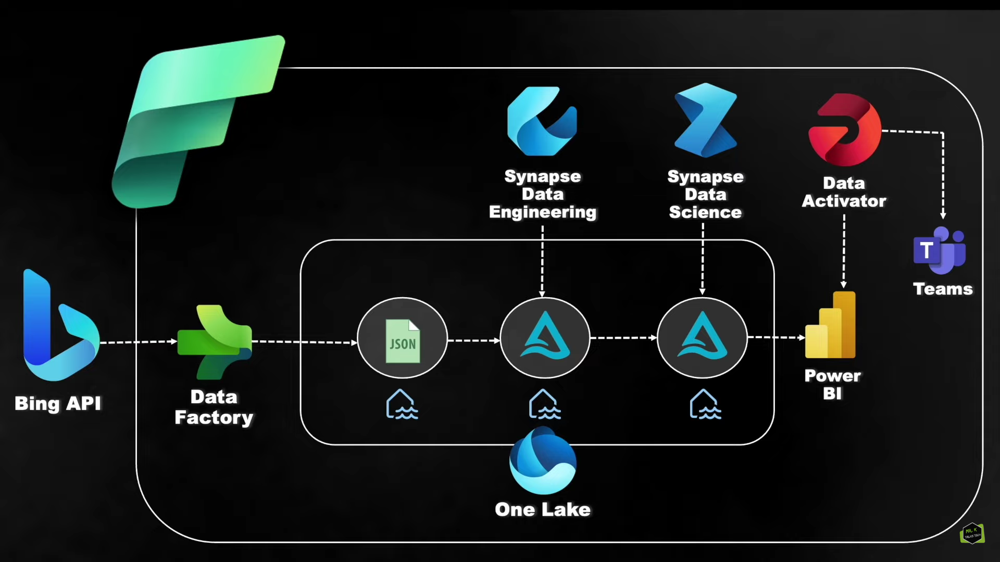
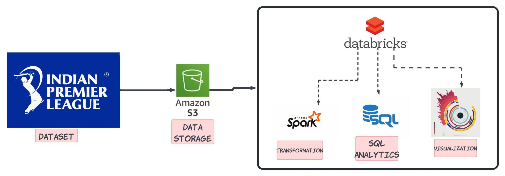
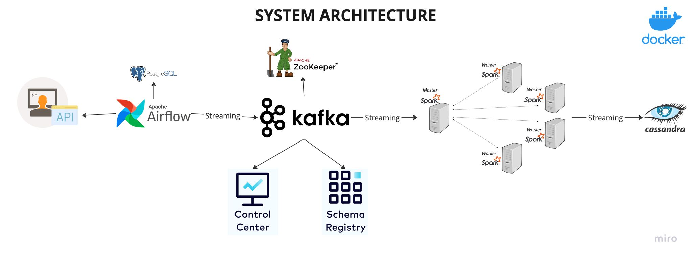

This project uses Microsoft Fabric to fetch daily news from Bing via API, stores the data in a data lake, performs sentiment analysis, and visualizes results with Power BI. An alert system sends email notifications based on news positivity. The entire process is automated for efficiency.


In this project, we will use Indian Premier League (IPL) data to demonstrate the core steps of big data processing using PySpark and Databricks. The data is uploaded to Amazon S3, then processed and analyzed using Databricks. We create clusters, run SQL queries, perform analysis, and visualize the results for better insights. This guide helps illustrate how to handle large-scale data efficiently with PySpark and Databricks.

This project demonstrates the creation of an end-to-end real-time data engineering pipeline using Apache Airflow, Kafka, Spark, and Cassandra. Random user data is fetched via an API, ingested into Kafka using Airflow DAGs, processed in real-time with Spark, and stored in Cassandra for long-term retention. Docker Compose is used to set up all components efficiently, ensuring a scalable and reliable data engineering solution.